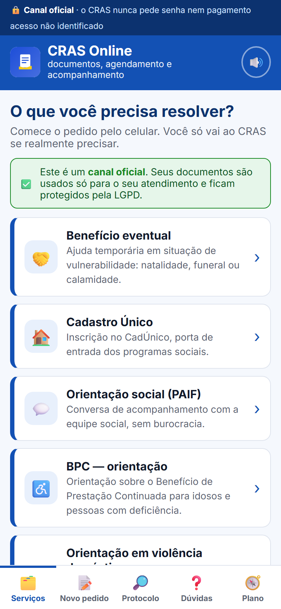
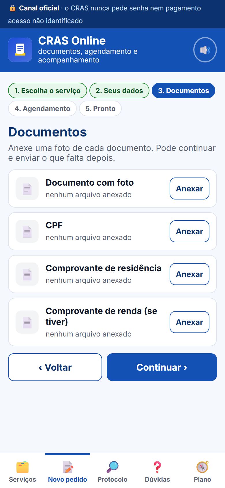
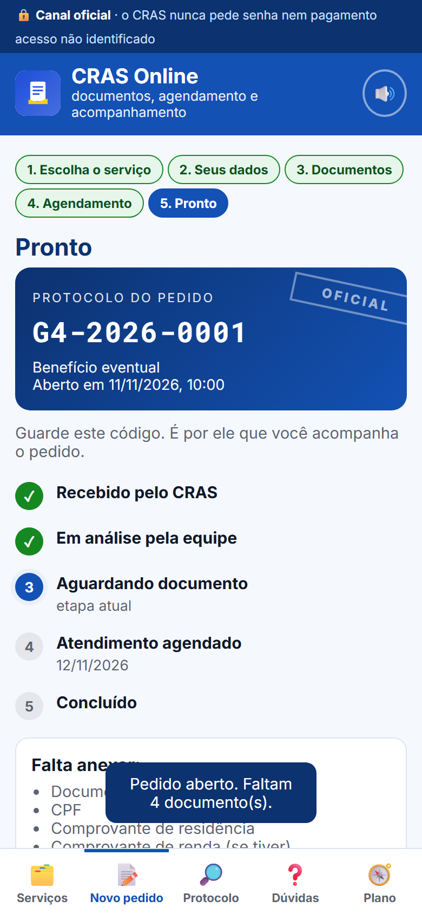

Começar o pedido, enviar documentos e acompanhar o protocolo pelo celular — indo ao CRAS só quando for realmente necessário.
Grupo 4CRAS OnlineProf. Renato
Anna Júlia Ferreira de Paula · Maria Eduarda Figueiredo Campos · Marcelly Regina de Figueiredo · Kaique Junior dos Santos
A pergunta que move o projeto
E se a fila do CRAS começasse em casa?
Grande parte do atendimento presencial é informação, documento e agendamento — coisas que o celular já resolve.
O CRAS não é um balcão de papel. É a porta da assistência social. O app devolve tempo para o que exige escuta humana.
O problema não é opinião
A rede é finita. A demanda por informação é gigante.
40 mide atendimentos nos CRAS em 2024MDS / Censo SUAS, 2024
40,6 mide famílias inscritas no Cadastro ÚnicoMDS, 2025
155,7 milatendimentos só na recepção do CRAS no DF, sem agendamentoSedes-DF, 2024
29 mide pessoas ainda sem internet; 16 mi nas classes DETIC Domicílios 2024
O gargalo não é só prédio: é atendimento repetitivo e exclusão digital. A solução precisa dos dois lados.
Quem sente primeiro
Três pessoas que passam pelo mesmo balcão.
M
Dona Marta, 45
Mãe de três, beneficiária
Precisa atualizar o CadÚnico, mas já perdeu um dia de trabalho por falta de documento.
Dor: volta para casa sem resolver e sem saber o que faltou.
J
Seu José, 61
Baixa escolaridade
Precisa de orientação sobre BPC, não usa aplicativo e prefere falar com uma pessoa.
Dor: o digital vira mais uma barreira.
S
Servidora do CRAS
Atendimento e acolhimento
Repete a mesma orientação o dia inteiro e sobra pouco tempo para os casos que exigem escuta.
Dor: o repetitivo consome o tempo do cuidado.
A proposta em uma tela
De fila e papel para pedido e protocolo.
Hoje
Fila e espera para informação básica
Documento que faltou descoberto no balcão
Segunda ida para concluir o pedido
Nenhum protocolo para acompanhar
→
Com o CRAS Online
Pedido começa no celular, com linguagem simples
Anexo com selo de legibilidade e checklist do serviço
Agendamento e protocolo com linha do tempo
WhatsApp e 0800 com pessoa de verdade
Como funciona
Cinco passos no celular — e uma pessoa sempre à mão.
1
Escolha e envie
Serviço, dados e documentos em um assistente de cinco passos.
2
Acompanhe o protocolo
Código e linha do tempo mostram em que etapa o pedido está.
3
Fale com o CRAS
WhatsApp oficial ou 0800 quando precisar de ajuda humana.



O que a pesquisa de campo disse
A confiança é o gargalo — e o WhatsApp é a ponte.
3,56importância de ter um atendente humano (Q15)n = 18 · escala 1–5
3,56utilidade de tirar dúvidas pelo WhatsApp (Q19)n = 18 · escala 1–5
2,28confiança em enviar foto de documento sensível pelo celular (Q11)n = 18 · escala 1–5
1,94frequência de já ter perdido um dia de trabalho (Q7; 72% nunca)n = 18 · escala 1–5
Hipótese parcialmente sustentada. A desconfiança em enviar documento é real e a preferência ainda é presencial (média 2,22 na Q16). O WhatsApp é o canal mais promissor — desde que com selo oficial e gente de verdade.
Planejamento estratégico
Missão, visão e valores.
Missão
Levar o CRAS para o celular do cidadão: começar o pedido, enviar documentos e acompanhar o protocolo sem sair de casa — indo ao CRAS só quando for realmente necessário.
Visão
Ser o canal digital de referência da assistência social em Mato Grosso até 2028, com atendimento oficial, humano e sem barreiras digitais.